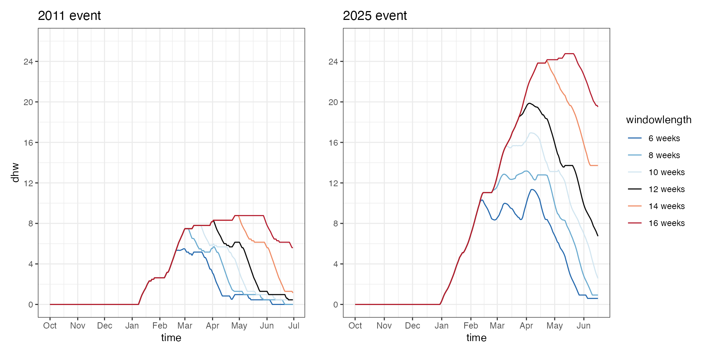

Extended Degree Heating Weeks
dhw_extended.RmdExtract data
Load OISST data:
library(terra)
library(tidyverse)
library(dhw)
library(sf)
library(tmap)
library(rnaturalearth)
library(patchwork)
# get Ningaloo extent via WA government SLIP services
url_geojson <- paste0(
"https://public-services.slip.wa.gov.au/public/rest/services/",
"SLIP_Public_Services/Property_and_Planning/MapServer/98/query?",
"where=1%3D1&outFields=*&f=geojson"
)
ningaloo_shp <- st_read(url_geojson, quiet = TRUE)
# process OISST
process_OISST(input = "/Volumes/Extreme_SSD/dhw/OISST/",
polygon = ningaloo_shp, crs = "EPSG:7844",
combinedfilename = "/Users/rof011/Desktop/Ningaloo_OISST.rds",
crop=TRUE, mask=TRUE, downsample=FALSE, mc.cores=1)
# read in raster, write for `dhw`
# ningaloo_OISST <- rast("/Users/rof011/Ningaloo_OISST.rds")
# ningaloo_OISST |> writeRaster("ningaloo_OISST.tif", overwrite=TRUE)
# read raster from package
ningaloo_OISST <- system.file("extdata", "ningaloo_OISST.tif", package = "dhw", mustWork = TRUE) |> rast()Extract OISST timeseries for two sites: Ningaloo forereef and Exmouth Gulf (Bundegi):
# set sites
ningaloo_pt <- st_point(c(113.926, -21.92)) |>
st_sfc(crs = 4326) |>
st_transform(terra::crs(ningaloo_OISST)) |>
st_buffer(0.01)
exmouth_pt <- st_point(c(114.179, -21.87)) |>
st_sfc(crs = 4326) |>
st_transform(terra::crs(ningaloo_OISST)) |>
st_buffer(0.01)
# extract OISST for each site
ningaloo_slope_OISST <- crop(ningaloo_OISST, vect(ningaloo_pt))
exmouth_OISST <- crop(ningaloo_OISST, vect(exmouth_pt))
# get rNaturalEarth data
aus <- rnaturalearth::ne_countries(country="Australia", scale=10) |> st_transform(crs(ningaloo_shp))
ningaloo_park <- st_difference(ningaloo_shp, aus)
# map sites
tm_basemap("Esri.WorldImagery") +
tm_shape(ningaloo_park,bbox=st_bbox(ext(ningaloo_OISST))) +
tm_polygons(fill_alpha=0, col="red", lwd=1.5) +
tm_shape(aus, bbox=st_bbox(ext(ningaloo_OISST))) +
tm_polygons(fill="cornsilk", col="black") +
tm_facets(nrow=1) + tm_layout() +
tm_shape(ningaloo_pt) +
tm_dots(size=0.6, shape=21, fill="red") +
tm_shape(ningaloo_pt) +
tm_text("Ningaloo", col="white", ymod=0.6, xmod=-1.9) +
tm_shape(exmouth_pt) +
tm_dots(size=0.6, shape=21, fill="aquamarine2") +
tm_shape(exmouth_pt) +
tm_text("Exmouth", col="white", ymod=0.8, xmod=1.4)Maximum DHW per year
For the reef slope site at Ningaloo (red circle in the map above) and Exmouth gulf site (Bundegi, blue circle), calculate the maximum DHW per year (1982-2025):
# calculate Ningaloo climatology
all_climatology <- create_climatology(ningaloo_OISST, baa = TRUE, quiet=TRUE)
# calculate Ningaloo climatology
ningaloo_climatology <- create_climatology(ningaloo_slope_OISST, baa = TRUE, quiet=TRUE)
ningaloo_climatology_df <- as_climatology_df(ningaloo_climatology) |> mutate(site="Ningaloo")
# calculate Exmouth climatology
exmouth_climatology <- create_climatology(exmouth_OISST, baa = TRUE, quiet=TRUE)
exmouth_climatology_df <- as_climatology_df(exmouth_climatology)|> mutate(site="Exmouth")
# combine df for climatologies:
climatology_df <- rbind(ningaloo_climatology_df, exmouth_climatology_df)
# plot max dhw timeseries
max_dhw_ningaloo <- plot_max_dhw(ningaloo_climatology$dhw) + ggtitle("Ningaloo")
max_dhw_exmouth <- plot_max_dhw(exmouth_climatology$dhw) + ggtitle("Exmouth") + ylab("")
max_dhw_ningaloo+max_dhw_exmouthSpatial patterns of SST
For the top 5 warmest years (1989, 1999, 2011, 1998, 2013, 2015) & map the max DHW days within each year (2024 included as a reference cool year)
# get the max DHW for the top five warmest years
top_5 <- ningaloo_climatology_df |>
filter(year %in% c(1988, 1999, 2011, 2013, 2024, 2025)) |>
group_by(year) |>
slice_max(order_by = dhw, n = 1, with_ties = FALSE) |>
ungroup()
sel_names <- format(as.Date(top_5$time), "%Y-%m-%d")
idx <- match(sel_names, names(all_climatology$dhw))
ningaloo_subset <- all_climatology$dhw[[idx[!is.na(idx)]]]
tm_shape(ningaloo_subset) +
tm_raster(col_alpha = 0.5,
col.scale = tm_scale_continuous(limits=c(0,26), values="-brewer.spectral"),
col.free=FALSE,
col.legend = tm_legend(title="DHW", orientation = "landscape")) +
tm_shape(aus, bbox=st_bbox(ext(ningaloo_OISST))) +
tm_polygons(fill="cornsilk") +
tm_shape(ningaloo_park) +
tm_polygons(fill_alpha=0, lwd=1.5) +
tm_facets(nrow=1) + tm_layout() +
tm_shape(ningaloo_pt) +
tm_dots(size=0.6, shape=21, fill="red") +
tm_shape(ningaloo_pt) +
tm_text("Ningaloo", ymod=0.6, xmod=-1.9) +
tm_shape(exmouth_pt) +
tm_dots(size=0.6, shape=21, fill="aquamarine2") +
tm_shape(exmouth_pt) +
tm_text("Exmouth", ymod=-0.6, xmod=1.6)DHW timeseries
For each site plot annual timeseries for the top 10 warmest years (black line = mean DHW over the timeseries, grey = 95% CI).
Increases in DHW intensity through time, but also increase in DHW window with more recent events (2011, 2013, 2025) starting early in the year (Jan) than earlier events (1988, 1998).
# plot DHW timeseries
a <- plot_annual_dhw(ningaloo_climatology$dhw) + ggtitle("Ningaloo")
b <- plot_annual_dhw(exmouth_climatology$dhw) + ggtitle("Exmouth")
a+bSST timeseries
For the top five warmest years on record: In earlier warm years (1988, 1999) SST warming increased in Feb-March, whereas in later events resulting in bleaching (2011, 2013, 2025) SST increased in late Dec - early Jan, resulting in prolonged elevated SST (grey line = monthly mean climatology for the period 1985 to 2012).
ref_sst_years <- c(1985, 1998, 2011, 2013, 2025)
climatology_df %>%
ungroup() %>%
mutate(
year = lubridate::year(time),
month = lubridate::month(time),
day = lubridate::day(time),
season_anchor = dplyr::if_else(month >= 10, year + 1L, year),
reference_date = lubridate::make_date(
dplyr::if_else(month >= 10, 1999L, 2000L),
month, day
)
) |>
filter(season_anchor %in% ref_sst_years) %>%
ggplot() +
theme_bw() +
facet_wrap(~site, ncol=1) +
geom_line(aes(x = reference_date, y = sst, color = as.factor(season_anchor)), linewidth = 1) +
geom_line(aes(x = reference_date, y = climatology), color="black", linewidth = 2, alpha=0.2) +
scale_x_date(
date_breaks = "1 month",
date_labels = "%b",
limits = c(as.Date("1999-09-19"), as.Date("2000-08-31"))
) +
labs(x = "Month", y = "SST") +
scale_color_manual(
name = "Season",
values = c("2025" = "#67001F", "2013" = "#CA4741", "2011" = "#F7B698", "1998" = "#A7CFE4", "1985" = "#053061")
) +
theme(
axis.text.x = element_text(angle = 0),
panel.grid.minor = element_blank(),
legend.position = c(0.99, 0.99),
legend.justification = c("right", "top"),
legend.background = element_rect(fill = "white", color = NA),
legend.box.background = element_blank(),
legend.title = element_blank()
) +
geom_vline(xintercept = as.Date("2000-01-01"), color = "grey", linetype = "dashed") Comparing 1998 with 2025 (note the early initiation in 2025 vs 1998)
year_1998 <- plot_sst_timeseries(ningaloo_climatology, 1998) + ggtitle("1998")
year_2025 <- plot_sst_timeseries(ningaloo_climatology, 2025) + ggtitle("2025")
(year_1998 / year_2025)Hotspot profiles
Comparing the HotSpot profiles for Ningaloo, 2025 has a similar window duration for thermal stress with HS > 1 (Jan-early May), but higer intensity thermal stress (HotSpot values 2.5-3) compared to 2011 (HotSpot values 1.5 - 2).
The HotSpot profiles for 2011 indicate sustained values ≥ 1 in Jan and Feb in 2011, with brief minor anomalies in April and May. In contrast, 2025 indicates prolonged HotSpots spanning two periods: Jan to mid-Feb, and late-Feb to mid-April.
ref_hs_years <- c(2011, 2025)
# summarise min/max per season
rects <-
climatology_df %>%
ungroup() %>%
mutate(
year = lubridate::year(time),
month = lubridate::month(time),
day = lubridate::day(time),
season_anchor = dplyr::if_else(month >= 10, year + 1L, year),
reference_date = lubridate::make_date(
dplyr::if_else(month >= 10, 1999L, 2000L),
month, day
)
) |>
filter(season_anchor %in% ref_hs_years) |>
filter(site == "ningaloo") |>
mutate(hs_fill = if_else(hotspots >= 1, hotspots, 1)) %>%
filter(hotspots > 0) %>%
group_by(season_anchor) %>%
summarise(
xmin = as.Date(min(reference_date, na.rm = TRUE)),
xmax = as.Date(max(reference_date, na.rm = TRUE)),
ymin = min(hotspots, na.rm = TRUE),
ymax = max(hotspots, na.rm = TRUE),
.groups = "drop"
) |>
mutate(ymin=0)
climatology_df %>%
ungroup() %>%
mutate(
year = lubridate::year(time),
month = lubridate::month(time),
day = lubridate::day(time),
season_anchor = dplyr::if_else(month >= 10, year + 1L, year),
reference_date = lubridate::make_date(
dplyr::if_else(month >= 10, 1999L, 2000L),
month, day
)
) |>
dplyr::filter(season_anchor %in% ref_hs_years) |>
mutate(hs_fill = if_else(hotspots >= 1, hotspots, 1)) %>% # cap lower bound at 1
ggplot() +
theme_bw() +
facet_wrap(~season_anchor, ncol = 2) +
geom_rect(
data = rects,
aes(xmin = xmin, xmax = xmax, ymin = ymin, ymax = ymax),
inherit.aes = FALSE,
fill = NA, color = "darkred", linewidth = 0.4, alpha=0.2, linetype = "dotted"
) +
geom_ribbon(
aes(x = reference_date, ymin = 1, ymax = hs_fill, fill = as.factor(season_anchor)),
alpha = 0.8, show.legend=FALSE
) +
geom_line(
aes(x = reference_date, y = hotspots), color="black",
linewidth = 0.5, show.legend=FALSE
) +
scale_x_date(
date_breaks = "1 month",
date_labels = "%b",
limits = c(as.Date("1999-11-19"), as.Date("2000-06-19"))
) +
labs(x = "Month", y = "Hotspots") +
scale_color_manual(
name = "Season",
values = c("2025" = "#D53E4F", "2011" = "yellow3")
) +
scale_fill_manual(
name = "Season",
values = c("2025" = "#D53E4F", "2011" = "yellow3")
) +
theme(
axis.text.x = element_text(angle = 0),
panel.grid.minor = element_blank(),
legend.position = c(0.99, 0.99),
legend.justification = c("right", "top"),
legend.background = element_rect(fill = "white", color = NA),
legend.box.background = element_blank(),
legend.title = element_blank()
) +
ylim(0, 4) +
geom_vline(xintercept = as.Date("2000-01-01"), color = "grey", linetype = "dashed") +
geom_hline(yintercept = 1, color = "darkgrey", linetype = "dashed") +
theme(
panel.grid.major = element_blank(),
panel.grid.minor = element_blank(),
axis.text.x = element_text(angle = 0),
legend.position = c(0.99, 0.99),
legend.justification = c("right", "top"),
legend.background = element_rect(fill = "white", color = NA),
legend.box.background = element_blank(),
legend.title = element_blank()
)DHW profiles
The sustained HotSpot values values ≥ 1 °C when a rolling 12-week window results in substantial accumulation of DHW over the 2025 period, reaching a x2.4 higher DHW than 2011 (19.9 DHW vs 8.32 DHW), despite broadly similar intensity in maximum SST anomaly values between the two years:
climatology_df %>%
ungroup() %>%
mutate(
year = lubridate::year(time),
month = lubridate::month(time),
day = lubridate::day(time),
season_anchor = dplyr::if_else(month >= 10, year + 1L, year),
reference_date = lubridate::make_date(
dplyr::if_else(month >= 10, 1999L, 2000L),
month, day
)
) |>
dplyr::filter(season_anchor %in% ref_hs_years) |>
dplyr::filter(site == "Ningaloo") |>
# mutate(hs_fill = if_else(hs >= 1, hs, 1)) %>% # cap lower bound at 1
ggplot() +
theme_bw() +
facet_wrap(~season_anchor, ncol = 2) +
geom_ribbon(
aes(x = reference_date, ymin = 0, ymax = dhw, fill = as.factor(season_anchor)),
alpha = 0.8, show.legend=FALSE
) +
geom_line(
aes(x = reference_date, y = dhw), color="black",
linewidth = 0.5, show.legend=FALSE
) +
scale_x_date(
date_breaks = "1 month",
date_labels = "%b",
limits = c(as.Date("1999-11-19"), as.Date("2000-06-19"))
) +
labs(x = "Month", y = "Hotspots") +
scale_color_manual(
name = "Season",
values = c("2025" = "#D53E4F", "2011" = "yellow3")
) +
scale_fill_manual(
name = "Season",
values = c("2025" = "#D53E4F", "2011" = "yellow3")
) +
theme(
axis.text.x = element_text(angle = 0),
panel.grid.minor = element_blank(),
legend.position = c(0.99, 0.99),
legend.justification = c("right", "top"),
legend.background = element_rect(fill = "white", color = NA),
legend.box.background = element_blank(),
legend.title = element_blank()
) +
ylim(0, 20) +
geom_vline(xintercept = as.Date("2000-01-01"), color = "grey", linetype = "dashed") +
geom_hline(yintercept = 1, color = "darkgrey", linetype = "dashed") +
theme(
panel.grid.major = element_blank(),
panel.grid.minor = element_blank(),
axis.text.x = element_text(angle = 0),
legend.position = c(0.99, 0.99),
legend.justification = c("right", "top"),
legend.background = element_rect(fill = "white", color = NA),
legend.box.background = element_blank(),
legend.title = element_blank()
)Extending DHW windows
The standard DHW metric is calculated using the following equation with a window hotspot accumulation across a 12 week period and an anomly of 1C
\[ \text{DHW}_i = \sum_{n = i-83}^{i} \left( \frac{\text{HS}_n}{7} \right), \quad \text{where } \text{HS}_n \geq 1 \]
using library(dhw) we can adjust the window length used
to calculate DHW from 12 weeks to a broader range (6, 8, 10, 12, 16, 20
weeks) as follows:
ningaloo_climatology$sst_dhw_6 <- calculate_dhw(ningaloo_climatology$hotspots, window = 6*7)
ningaloo_climatology$sst_dhw_8 <- calculate_dhw(ningaloo_climatology$hotspots, window=8*7)
ningaloo_climatology$sst_dhw_10 <- calculate_dhw(ningaloo_climatology$hotspots, window=10*7)
ningaloo_climatology$sst_dhw_12 <- calculate_dhw(ningaloo_climatology$hotspots, window=12*7)
ningaloo_climatology$sst_dhw_14 <- calculate_dhw(ningaloo_climatology$hotspots, window=16*7)
ningaloo_climatology$sst_dhw_16 <- calculate_dhw(ningaloo_climatology$hotspots, window=20*7)
ningaloo_OISST_dhw_lag <- rbind(
data.frame(time=as.Date(time(ningaloo_climatology$sst_dhw_6)), dhw=as.vector(values(ningaloo_climatology$sst_dhw_6))) |> mutate(windowlength="6 weeks"),
data.frame(time=as.Date(time(ningaloo_climatology$sst_dhw_8)), dhw=as.vector(values(ningaloo_climatology$sst_dhw_8))) |> mutate(windowlength="8 weeks"),
data.frame(time=as.Date(time(ningaloo_climatology$sst_dhw_10)), dhw=as.vector(values(ningaloo_climatology$sst_dhw_10))) |> mutate(windowlength="10 weeks"),
data.frame(time=as.Date(time(ningaloo_climatology$sst_dhw_12)), dhw=as.vector(values(ningaloo_climatology$sst_dhw_12))) |> mutate(windowlength="12 weeks"),
data.frame(time=as.Date(time(ningaloo_climatology$sst_dhw_14)), dhw=as.vector(values(ningaloo_climatology$sst_dhw_14))) |> mutate(windowlength="14 weeks"),
data.frame(time=as.Date(time(ningaloo_climatology$sst_dhw_16)), dhw=as.vector(values(ningaloo_climatology$sst_dhw_16))) |> mutate(windowlength="16 weeks")) |>
mutate(year = year(time), month = month(time), day=day(time)) |>
mutate(windowlength=factor(windowlength, levels=c("6 weeks", "8 weeks", "10 weeks", "12 weeks", "14 weeks", "16 weeks")))
library(patchwork)
a <-
ggplot() + theme_bw() + ggtitle("2011 event") +
geom_line(data = ningaloo_OISST_dhw_lag |> dplyr::filter((year == 2010 & month %in% 10:12) | (year == 2011 & month %in% 1:6)),
aes(time, dhw, color=windowlength), show.legend=FALSE) +
scale_color_manual(values = c("#2166AC", "#67A9CF", "#D1E5F0", "#000000", "#EF8A62", "#B2182B")) +
scale_x_date(date_breaks = "1 month", date_labels = "%b") +
scale_y_continuous(limits=c(0,26), breaks=seq(0,26,4))
b <-
ggplot() + theme_bw() + ggtitle("2025 event") +
geom_line(data = ningaloo_OISST_dhw_lag |> dplyr::filter((year == 2024 & month %in% 10:12) | (year == 2025 & month %in% 1:6)),
aes(time, dhw, color=windowlength), show.legend=TRUE) +
scale_color_manual(values = c("#2166AC", "#67A9CF", "#D1E5F0", "#000000", "#EF8A62", "#B2182B")) +
scale_x_date(date_breaks = "1 month", date_labels = "%b") +
scale_y_continuous(limits=c(0,26), breaks=seq(0,26,4)) + ylab("")
a+b In prolonged heating events like 2025, adjusting the windowlength for cumulative HotSpots results in amplified DHW. During less intense events like 2011, increasing windowlength results in prolonged DHW values with less impact on maximum DHW.
Extending DHW anomalies
similar to window length, using library(dhw) we can
adjust the anomalies used to calculate DHW from 12 weeks to a broader
range (0, 0.5, 1, 1.5, 2C) as follows.
Reducing the anomaly threshold gives a more proportionate response between the two events than windowlength, with the exception of 2C anomalies that are absent in the 2011 event:
ningaloo_climatology$sst_anom_0.0 <- calculate_hotspots(ningaloo_climatology$mmm, ningaloo_climatology$sst, anomaly=0) |>
calculate_dhw(anomaly=0)
ningaloo_climatology$sst_anom_0.5 <- calculate_hotspots(ningaloo_climatology$mmm, ningaloo_climatology$sst, anomaly=0.5) |> calculate_dhw(anomaly=0.5)
ningaloo_climatology$sst_anom_1.0 <- calculate_hotspots(ningaloo_climatology$mmm, ningaloo_climatology$sst, anomaly=1) |>
calculate_dhw(anomaly=1)
ningaloo_climatology$sst_anom_1.5 <- calculate_hotspots(ningaloo_climatology$mmm, ningaloo_climatology$sst, anomaly=1.5) |>
calculate_dhw(anomaly=1.5)
ningaloo_climatology$sst_anom_2.0 <- calculate_hotspots(ningaloo_climatology$mmm, ningaloo_climatology$sst, anomaly=2) |>
calculate_dhw(anomaly=2)
ningaloo_OISST_dhw_anomalies <- rbind(
data.frame(time=as.Date(time(ningaloo_climatology$sst_anom_0.0)),
dhw=as.vector(values(ningaloo_climatology$sst_anom_0.0))) |> mutate(anomaly="0 anom"),
data.frame(time=as.Date(time(ningaloo_climatology$sst_anom_0.5)),
dhw=as.vector(values(ningaloo_climatology$sst_anom_0.5))) |> mutate(anomaly="0.5 anom"),
data.frame(time=as.Date(time(ningaloo_climatology$sst_anom_1.0)),
dhw=as.vector(values(ningaloo_climatology$sst_anom_1.0))) |> mutate(anomaly="1.0 anom"),
data.frame(time=as.Date(time(ningaloo_climatology$sst_anom_1.5)),
dhw=as.vector(values(ningaloo_climatology$sst_anom_1.5))) |> mutate(anomaly="1.5 anom"),
data.frame(time=as.Date(time(ningaloo_climatology$sst_anom_2.0)),
dhw=as.vector(values(ningaloo_climatology$sst_anom_2.0))) |> mutate(anomaly="2.0 anom")) |>
mutate(year = year(time), month = month(time), day=day(time)) |>
mutate(anomaly=factor(anomaly, levels=c("0 anom", "0.5 anom", "1.0 anom", "1.5 anom", "2.0 anom")))
library(patchwork)
ref_years <- c(2011, 2025)
ningaloo_OISST_dhw_anomalies %>%
ungroup() %>%
mutate(
season_anchor = if_else(month >= 8, year + 1L, year), # Oct–Dec belong to next year’s season
reference_date = make_date(if_else(month >= 8, 1999L, 2000L), # map Oct–Dec to 1999, Jan–Jun to 2000
month, day)
) %>%
filter(season_anchor %in% ref_years) |>
ggplot() + theme_bw() + ggtitle("2011 event") +
facet_wrap(~season_anchor, ncol=2) +
geom_line(aes(reference_date, dhw, group=anomaly, color=anomaly), show.legend=TRUE) +
scale_color_manual(values = c("0 anom" = "#2166AC", "0.5 anom" = "#67A9CF", "1.0 anom" = "#000000", "1.5 anom" = "#EF8A62", "2.0 anom" = "#B2182B")) +
# scale_x_date(date_breaks = "1 month", date_labels = "%b") #+
# scale_y_continuous(limits=c(0,26), breaks=seq(0,26,4))
scale_x_date(
date_breaks = "1 month",
date_labels = "%b",
limits = c(as.Date("1999-11-19"), as.Date("2000-06-19"))
)